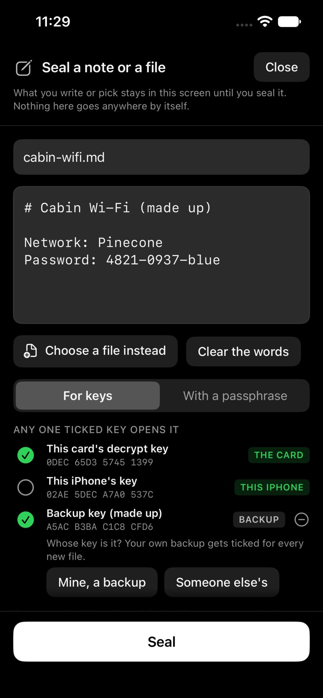

04 / 09Seal guide
Swap keys with someone
To seal a file for someone, you need their public key. To get files from them, they need yours.
A key has two halves. The private half opens files: it stays in your iPhone’s chip, and nobody ever sees it. The public half is a small file that is safe to hand out: whoever has it can seal files that only your iPhone opens.
Send your public key
- 1
On the Vault page, find This iPhone’s key.
- 2
Tap
Share public keyand send it with AirDrop, Messages or Mail. Or tapCopy public keyand paste it into any chat.
Add theirs
- 1
They send you their public key, as a file (often
.asc) or as text. - 2
As a file: open it in Messages, Mail or Files and pick Seal. Seal asks whose key it is: tap
Someone else's. - 3
As text: copy it, then on the sealing screen tap
Paste their key. - 4
Their key shows on the sealing screen marked THEIRS. Tick it and seal.

When it matters who is who, read the fingerprint (the groups of letters under the key’s name) to each other on a call. If they match, the key is really theirs.
Put them in a vault
Make a vault with your keys and theirs, like Business with you and your partner. Every file sealed for it opens for each of you.
They don’t have Seal?
Seal for them with a passphrase instead: on the sealing screen pick With a passphrase, seal, then Copy the code and give them the code another way (a call, in person). Copy how to open it gives them the steps for gpg on a computer.